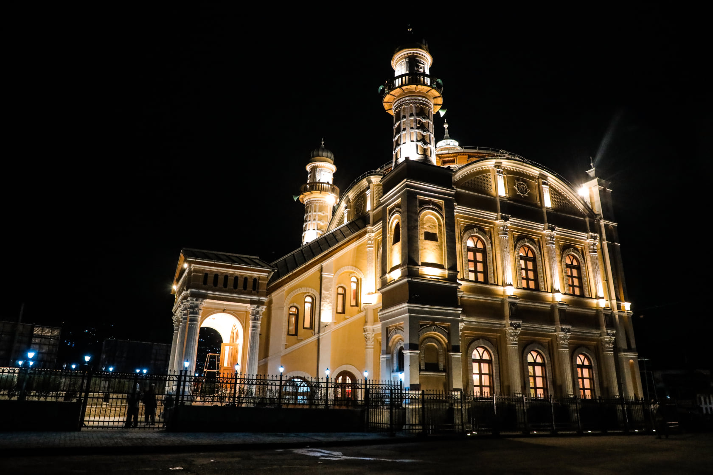

Kabul, Afghanistan’s capital, has a rich and turbulent history spanning over 3,500 years. Nestled in a strategic location along ancient trade routes, it has been a nexus of cultures, empires, and religions. The city first appeared in historical records around 1500 BCE in Vedic texts. Throughout its history, Kabul witnessed the reigns of the Achaemenids, Mauryans, and Kushans, followed by its prominence under Islamic rule after the Arab conquests in the 7th century CE. It flourished during the Ghaznavid and Timurid periods as a center of learning and trade read more.
Find out what a job involves and if it's right for you.
Your name
Your email
Message